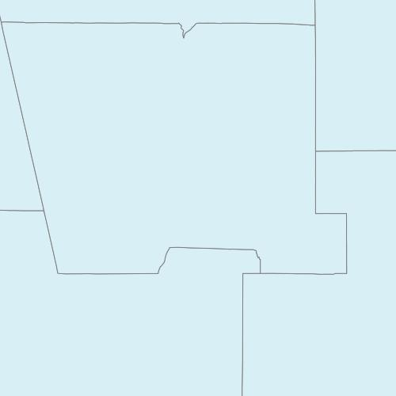

Elisa Cedillos
February 26 2014
Milestone 6
There are a large number of WMS services available on the web. One way to find interesting services is to search for them using standard search engines such as Google. Try searching for the following search phrase:
- “REQUEST=GetCapabilities” and “SERVICE=WMS”
- as a single search phrase
Question 1
What search engine did you use?
Question 2
How many 'hits' did you get?
Question 3
How useful (generally in terms of getting a pointers to live WMS services [defined as a functioning GetCapabilities request]) were the ‘hits’?
- The hits were very useful, the descriptions that came with each result helped define what type of data I was looking at.
Pick two of the services that included live "GetCapabilities" requests that you found above, and answer the following questions about each.
Question 4 (Service 1)
a. What is the URL for the full GetCapabilities request to the service?
b. What is the Name of the service?
c. What Format(s) are available for GetMap requests from the service?
d. How many layers are included in the service (including nesting layers)?
- a. http://dss.csiss.gmu.edu/cgi-bin/wms_cdlall?SERVICE=WMS&VERSION=1.1.1&REQUEST=GetCapabilities
- b. Cropland Data Layer WMS Service
- c.
image/tiff
image/gif
image/png
image/png; mode=24bit
image/jpeg
image/vnd.wap.wbmp
image/svg+xml
- d. 20 Layers are available, including nesting layers
Question 4 (Service 2)
a. What is the URL for the full GetCapabilities request to the service?
b. What is the Name of the service?
c.What Format(s) are available for GetMap requests from the service?
d. How many layers are included in the service (including nesting layers)?
- a. https://www.geoportal.ie/wss/service/ProtectedSites_NM-WMS-I-POL/guest?request=getcapabilities&service=wms
- b. Protected Sites - National Monuments (INSPIRE View Service)
- c.
image/bmp
image/jpeg
image/tiff
image/png
image/png8
image/png24
image/png32
image/gif
image/svg+xml
- d. 9 Layers are available, including nesting layers.
Question 5
For one of the layers in the first service,
a. What is the name of the layer?
b. What is the SRS of the layer?
c. What is the name of the projection that matches the SRS EPSG code?
d. What is the LatLonBoundingBox of the layer?
- a. Name=cdl_2009
- b. SRS=epsg:102004,epsg:4326
- c. Projection name: USA Contiguous Lambert Conformal Conic, Geographic WGS 84; respectively
- d. BBOX=-127.887,22.9401,-65.3455,51.605
Open the following GetCapabilities request in your browser. Select “View Source” from the browser menu to see the delivered XML document (it may appear as an unformatted string of text by default in your browser - if that is the case, save the file to your hard drive and view it in a text editor). Use the information in the XML capabilities document to formulate GetMap requests for the following map images. Include the requests and resulting images in your write-up. Comment on anything unusual that you notice in the images that are returned.
http://gstore.unm.edu/apps/rgis/datasets/92403ebf-aec5-404b-ae8a-6db41f388737/services/ogc/wms?SERVICE=wms&REQUEST=GetCapabilities&VERSION=1.1.1
Question 6
for the area surrounding Bernalillo County (-107.2,34.7,-106,35.25) as a 200x200 pixel JPEG for the same area as a 500x500 pixel PNG
- http://gstore.unm.edu/apps/rgis/datasets/92403ebf-aec5-404b-ae8a-6db41f388737/services/ogc/wms?VERSION=1.1.1&SERVICE=WMS&REQUEST=GetMap&BBOX=-107.2,34.7,-106,35.25&LAYERS=2007fe_35_county&WIDTH=200&HEIGHT=200&SRS=EPSG:4269&FORMAT=image/jpeg&STYLES=

- http://gstore.unm.edu/apps/rgis/datasets/92403ebf-aec5-404b-ae8a-6db41f388737/services/ogc/wms?VERSION=1.1.1&SERVICE=WMS&REQUEST=GetMap&BBOX=-107.2,34.7,-106,35.25&LAYERS=2007fe_35_county&WIDTH=500&HEIGHT=500&SRS=EPSG:4269&FORMAT=image/jpeg&STYLES=
- 
Open the following (linked) KML file in Google Earth, uncompress it, and save the contained KML file on your computer. Open the KML file in a text editor
http://rgis.unm.edu/gstore/datasets/3f0a85aa-b7f8-47bd-8db6-1c0e66becf72/nm_state_bdy_00.derived.kml
Question 7
Add a second Placemark element to the KML file that represents a square region that is completely contained within the state boundary. Save the KML file and open it in Google Earth (download from http://www.google.com/earth/index.html) or view it in Google Maps (by adding it to your GitHub gh-pages branch) as demonstrated in the lecture to verify that you have successfully created the file. Submit the KML file (as a link in your writeup) as part of your writeup for the milestone.